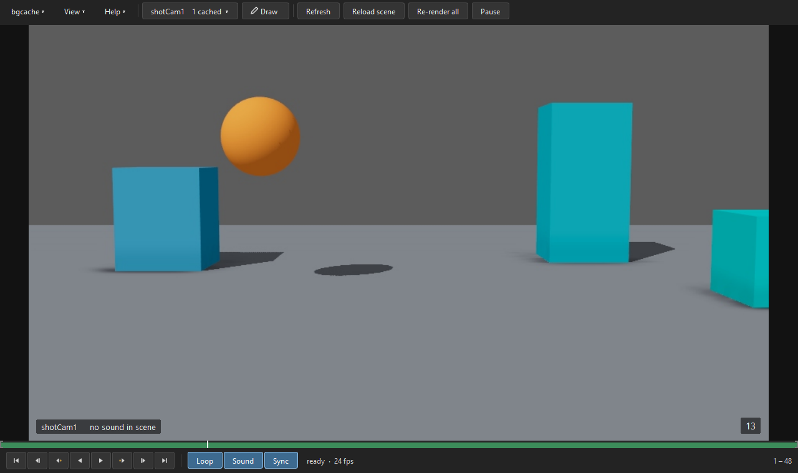
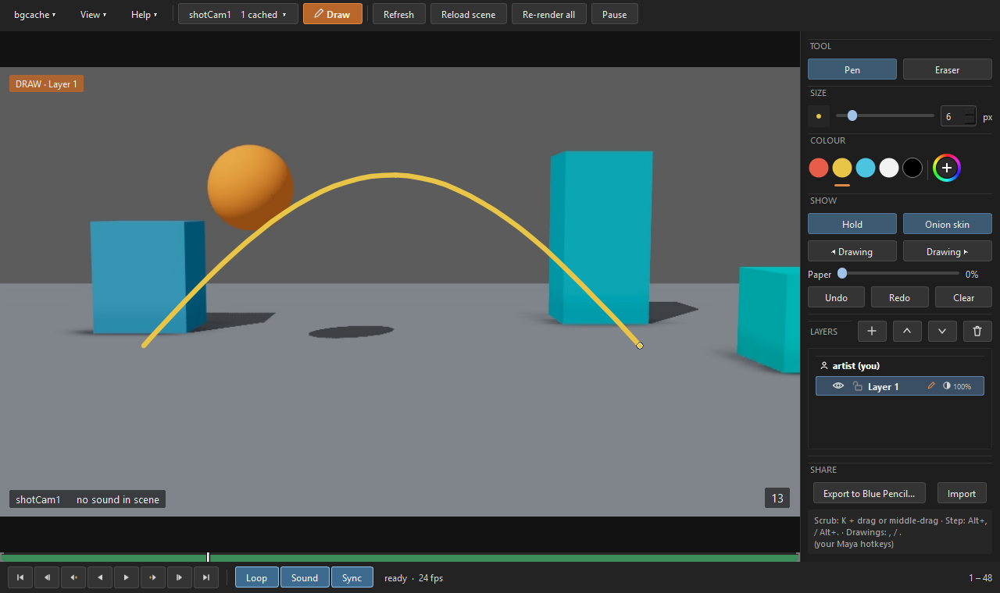
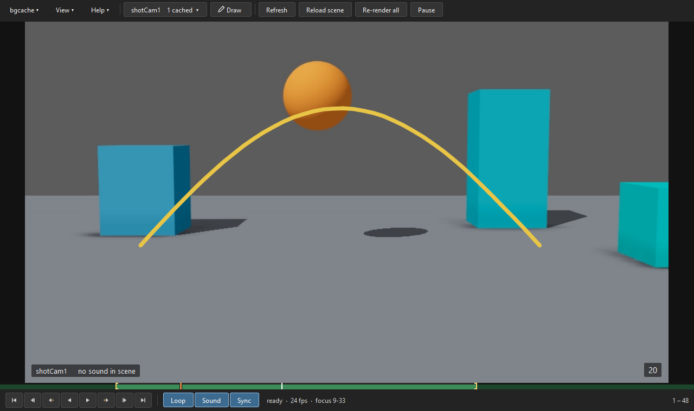

Draw over playback
Thumbnail your next pass, or mark arcs and spacing, right over the moving shot.
- Pen and eraser with tablet pressure, layers, hold and onion skin
- Paper: fades the picture so drawings read
- Export to Maya's Blue Pencil
Heavy rigs can't play in real time, so you playblast again and again. BGCache does it for you in the background: a hidden second Maya re-playblasts only the frames your edit changed, the one you're on first, and a player plays the shot at full speed with sound while you keep animating.

Three programs on your own computer, talking through small files. No network, no server, and your scene file is never saved.
Your Maya watches your key edits and sends just the changed curves, when you let go of the mouse.
A second Maya with a copy of your scene applies the edit and playblasts only the frames it changed, starting with the one you're on.
A separate player window plays the cached frames at full speed with sound, and follows your Maya's time slider and hotkeys.
The player follows your own Maya hotkeys: step frame, step key, play, scrub.
Thumbnail your next pass, or mark arcs and spacing, right over the moving shot.

Working on one bounce? Drag the two handles on the cache bar, or press I and O, and BGCache caches only that part first. Playback still covers the whole shot, and Maya's time slider isn't touched.

About a minute. It installs as a Maya module in your own Maya folder and never edits userSetup.py or Maya.env.
bgcache-<version>-windows-simple.zip, -macos- or -linux-) and unzip it.install_bgcache.py into a Maya viewport and choose Install. No restart needed.To update, drag the new version's installer in the same way (your old copy is kept). The same installer also uninstalls.
The same idea behind each one: less waiting, more animating.
Live playback for heavy shots, with drawing over playback.
Copy animation and constraints, prop attach setups too, from another shot's file into yours: one frame or the whole range, without opening that file.
Put the previous and next shots' movies on your camera as image planes, so you animate in continuity right in the viewport.
The tools are free and stay free. If they save you time and you'd like to say thanks, a donation helps me keep making them. Bug reports and ideas help just as much.